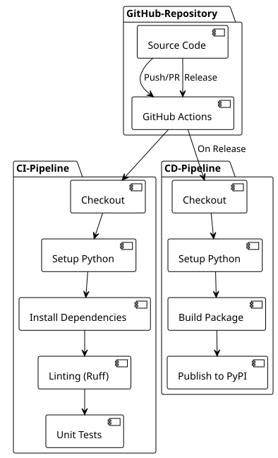

Teil 1: Richten Sie ein einfaches CI/CD-Pipeline für Python und PyPI ein.
Publié le 17 July 2025
Einführung
Die Automatisierung der Entwicklungsprozesse ist in modernen Projekten unverzichtbar geworden. Ein gut konzipierter CI/CD-Pipeline ermöglicht nicht nur das frühzeitige Erkennen von Regressions im Entwicklungszyklus, sondern auch die vollständige Automatisierung des Bereitstellungsprozesses.
In diesem Artikel werden wir untersuchen, wie man eine vollständige Pipeline mit GitHub Actions für eine Python-Anwendung einrichtet, von Continuous Integration (CI) bis zum Continuous Deployment (CD) auf PyPI.
Architektur des Pipelines
Unser Pipeline besteht aus zwei unterschiedlichen Workflows:
-
CI-PipelineAusgeführt bei jedem Push und Pull Request
-
CD-Pipeline: Ausgelöst nur während der GitHub-Releases

Konfiguration des CI-Pipelines
Struktur des CI-Workflows
Der CI-Workflow ist darauf ausgelegt, jeden Beitrag zum Code zu validieren. Hier ist seine vollständige Konfiguration :
name: CI/CD Pipeline
on:
push:
branches:
- main
pull_request:
branches:
- main
jobs:
build:
runs-on: ubuntu-latest
steps:
- name: Checkout code
uses: actions/checkout@v4
- name: Set up Python
uses: actions/setup-python@v5
with:
python-version: '3.x'
- name: Install dependencies
run: |
python -m pip install --upgrade pip
pip install -r requirements.txt
pip install ruff pytest pytest-mock
- name: Run Linting (Ruff)
run: ruff check .
- name: Run Tests (Pytest)
run: pytestAnalyse der CI-Schritte
1. Auslöser (on)
----
----
on:
push:
branches:
- main
pull_request:
branches:
- main
----
Die Pipeline wird ausgelöst bei : - Jeder Push auf dem Branch`main` - Jede Pull-Request in Richtung`main`
Dieser Ansatz gewährleistet, dass der Hauptcode stabil bleibt und dass jeder Beitrag vor der Integration validiert wird.
==== 2. Ausführungsumgebung
----
runs-on: ubuntu-latest
Ubuntu Latest bietet einen guten Kompromiss zwischen Leistung, Kosten und Kompatibilität für die meisten Python-Projekte.
==== 3. Checkout des Codes
```yaml
----
----
- name: Checkout code
uses: actions/checkout@v4
----
Die Aktion`checkout@v4`ruft den Quellcode des Repositorys ab. Die Version v4 bringt Leistungs- und Sicherheitsverbesserungen.
==== 4. Python-Konfiguration
----
- name: Set up Python uses: actions/setup-python@v5 with: python-version: '3.x'
Die Verwendung von`'3.x'`ermöglicht das automatische Verwenden der letzten stabilen Version von Python 3, was die Wartung vereinfacht.
==== 5. Installation der Abhängigkeiten
```yaml
----
----
- name: Install dependencies
run: |
python -m pip install --upgrade pip
pip install -r requirements.txt
pip install ruff pytest pytest-mock
----
Dieser Schritt : - Aktualisiere pip auf die neueste Version - Installiere die Projektabhängigkeiten - Füge Entwicklungstools (Linting und Tests) hinzu
==== 6. Linting mit Ruff
----
- name: Run Linting (Ruff) run: ruff check .
**Ruff**est ein ultra-schneller Python-Linter, geschrieben in Rust. Er kombiniert die Funktionen mehrerer Tools (Flake8, Black, isort) zu einem leistungsfähigen Werkzeug.
==== 7. Ausführung der Tests
```yaml
----
----
- name: Run Tests (Pytest)
run: pytest
----
Pytest führt die gesamte Testsuite aus und stellt sicher, dass die Änderungen keine Regressionen einführen.
== Konfiguration des Bereitstellungs-Pipelines (CD)
=== Struktur des CD-Workflows
Der CD-Workflow wird nur bei GitHub-Releases ausgelöst und automatisiert die Veröffentlichung auf PyPI :
[source,yaml]
----
name: Publish to PyPI
on:
release:
types:
- published
jobs:
deploy:
runs-on: ubuntu-latest
steps:
- name: Checkout code
uses: actions/checkout@v4
- name: Set up Python
uses: actions/setup-python@v5
with:
python-version: '3.x'
- name: Install dependencies
run: |
python -m pip install --upgrade pip
pip install setuptools wheel twine
- name: Build and publish
env:
TWINE_USERNAME: __token__
TWINE_PASSWORD: ${{ secrets.PYPI_API_TOKEN }}
run: |
python setup.py sdist bdist_wheel
twine upload dist/*
----
=== Analyse der CD-Schritte
==== Auslöser Release
----
on: release: types: - published
Der CD-Pipeline wird nur beim Publizieren eines GitHub-Release ausgelöst. Dieser Ansatz gewährleistet eine präzise Kontrolle der Bereitstellungen.
==== 2. Installation der Build-Tools
```yaml
----
----
pip install setuptools wheel twine
----
- **setuptools**: Python-Verpackungswerkzeuge - **Rad**: modernes Python-Distributionsformat - **Bindfaden**Sicheres Tool zum Hochladen nach PyPI
==== 3. Konfiguration der Authentifizierung
----
env: TWINE_USERNAME: __token__ TWINE_PASSWORD: ${{ secrets.PYPI_API_TOKEN }}
Die Authentifizierung verwendet ein PyPI-API-Token, das als GitHub-Secret gespeichert ist, was sicherer ist als herkömmliche Anmeldeinformationen.
==== 4. Build und Veröffentlichung
```yaml
----
----
run: |
python setup.py sdist bdist_wheel
twine upload dist/*
----
- `sdist`Erstelle eine Quellcode-Distribution - `bdist_wheel`: Erstelle ein Wheel (binäre Verteilung) - `twine upload`Veröffentlichte die Distributionen auf PyPI
== Konfiguration des Python-Pakets
=== Struktur der setup.py
Damit die Pipeline funktioniert, muss Ihr Projekt eine Datei enthalten.`setup.py`:
[source,python]
----
from setuptools import setup, find_packages
with open("README.adoc", "r", encoding="utf-8") as fh:
long_description = fh.read()
setup(
name="playlist-downloader",
version="1.0.0",
author="Votre Nom",
author_email="votre.email@example.com",
description="CLI tool for managing YouTube playlists",
long_description=long_description,
long_description_content_type="text/plain",
url="https://github.com/cheroliv/playlist-downloader",
packages=find_packages(),
classifiers=[
"Development Status :: 4 - Beta",
"Intended Audience :: Developers",
"License :: OSI Approved :: MIT License",
"Operating System :: OS Independent",
"Programming Language :: Python :: 3",
"Programming Language :: Python :: 3.8",
"Programming Language :: Python :: 3.9",
"Programming Language :: Python :: 3.10",
"Programming Language :: Python :: 3.11",
],
python_requires=">=3.8",
install_requires=[
"typer>=0.9.0",
"yt-dlp>=2023.1.6",
"google-api-python-client>=2.70.0",
"google-auth-oauthlib>=0.7.1",
"pymonad>=2.4.0",
"pyyaml>=6.0",
],
entry_points={
"console_scripts": [
"playlist-downloader=cli:app",
],
},
)
----
=== Wesentliche Punkte des setup.py
1. **Metadaten**: Name, Version, Autor, Beschreibung
2. **Abhängigkeiten**: Liste der erforderlichen Pakete
3. **Eintrittspunkte**: Freigegebene CLI-Befehle
4. **Klassifikatoren**: Metadaten für PyPI
== Sicherung mit den GitHub Secrets
=== Konfiguration des PyPI-Tokens
1. **Erstelle ein API-Token auf PyPI**:
- Melden Sie sich bei PyPI an - Gehe zu Account Settings > API tokens - Erstelle ein neues Token mit den entsprechenden Berechtigungen
1. **Geheimnis zu GitHub hinzufügen**:
- Repository-Einstellungen > Geheimnisse und Variablen > Aktionen - Erstellen Sie ein neues Geheimnis namens`PYPI_API_TOKEN` - Fügen Sie Ihr PyPI-Token ein
[plantuml, secrets-flow, svg]
----
@startuml
!theme plain
actor Developer as dev
participant "GitHub-Repository" as repo
participant "GitHub-Aktionen" as actions
participant PyPI
dev -> repo : Configure PYPI_API_TOKEN secret
repo -> actions : Trigger CD pipeline on release
actions -> actions : Access secret securely
actions -> PyPI : Authenticate with token
PyPI -> PyPI : Validate and publish package
note over actions, PyPI
Token never exposed in logs
Automatic rotation possible
end note
@enduml
----
== Workflow der vollständigen Bereitstellung
=== Bereitstellungssequenz
[plantuml, deployment-sequence, svg]
----
@startuml
!theme plain
actor Developer as dev
participant "Local Git" as git
participant "GitHub" as github
participant "GitHub-Aktionen" as actions
participant PyPI
participant "Endbenutzer" as users
dev -> git : git tag v1.0.0
dev -> git : git push origin v1.0.0
git -> github : Push tag
dev -> github : Create release from tag
github -> actions : Trigger CD pipeline
actions -> actions : Checkout code
actions -> actions : Setup Python environment
actions -> actions : Install build tools
actions -> actions : Build distributions (sdist + wheel)
actions -> PyPI : Upload to PyPI with token
PyPI -> PyPI : Validate and publish
users -> PyPI : pip install playlist-downloader
note over dev, github
Release creation can be automated
or done manually through GitHub UI
end note
@enduml
----
=== Zustände der Pipeline
[plantuml, pipeline-states, svg]
----
@startuml
!theme plain
[*] --> Idle
Idle --> CI_Running : Push/PR created
CI_Running --> CI_Success : All checks pass
CI_Running --> CI_Failed : Linting/Tests fail
CI_Success --> Idle : Merge completed
CI_Failed --> Idle : Fix and retry
Idle --> CD_Running : Release published
CD_Running --> CD_Success : Package published
CD_Running --> CD_Failed : Build/Upload error
CD_Success --> Idle : Package available on PyPI
CD_Failed --> Idle : Fix and retry release
note on link #red : Blocks merge
note on link #green : Allows deployment
@enduml
----
== Gute Praktiken und Optimierungen
=== 1. Versionsverwaltung
Verwenden Sie semantische Git-Tags:
----
git tag -a v1.2.3 -m "Release version 1.2.3" git push origin v1.2.3
=== 2. Matrix-Tests
Um auf mehreren Python-Versionen zu testen:
```yaml
----
----
strategy:
matrix:
python-version: [3.8, 3.9, "3.10", "3.11"]
----
=== 3. Abhängigkeits-Cache
Beschleunigen Sie die Builds mit dem Cache:
----
- name: Cache pip dependencies uses: actions/cache@v3 with: path: ~/.cache/pip key: ${{ runner.os }}-pip-${{ hashFiles('**/requirements.txt') }}
=== 4. Bereitstellungsumgebungen
Verwenden Sie GitHub-Umgebungen für kontrollierte Bereitstellungen:
```yaml
----
----
jobs:
deploy:
environment: production
runs-on: ubuntu-latest
----
== Anwendungsfall und Architektur
=== Use-Case-Diagramm
[plantuml, use-cases, svg]
----
@startuml
!theme plain
left to right direction
actor "Entwickler" as dev
actor "GitHub Actions" as ga
actor "Endbenutzer" as user
package "CI/CD-System" {
usecase "Linting ausführen" as lint
usecase "Tests ausführen" as test
usecase "Paket bauen" as build
usecase "Auf PyPI veröffentlichen" as publish
usecase "Release erstellen" as release
}
dev --> lint : Pushes code
dev --> test : Pushes code
dev --> release : Creates release
ga --> build : On release trigger
ga --> publish : After successful build
user --> publish : Downloads package
lint .> test : triggers
test .> build : on success
build .> publish : on success
@enduml
----
=== Architektur der Bereitstellung
[plantuml, deployment-architecture, svg]
----
@startuml
!theme plain
cloud "GitHub" {
[Source Repository]
[GitHub Actions]
[Secrets Store]
}
cloud "PyPI" {
[Package Registry]
[Distribution Files]
}
node "CI/CD-Pipeline" {
[Linting]
[Testing]
[Building]
[Publishing]
}
[Source Repository] --> [GitHub Actions] : Triggers
[GitHub Actions] --> [Linting]
[Linting] --> [Testing]
[Testing] --> [Building]
[Building] --> [Publishing]
[Publishing] --> [Package Registry] : Uploads
[Secrets Store] --> [Publishing] : Provides token
note as N1
Secure token-based
authentication
end note
[Secrets Store] .. N1
@enduml
----
== Überwachung und Debugging
=== Logs und Monitoring
GitHub Actions stellt detaillierte Logs für jeden Schritt bereit. Für das Debuggen:
1. **Untersuchen Sie die Logs**von jedem Schritt
2. **Aktiviere den Debug**mit`ACTIONS_STEP_DEBUG`
3. **Verwenden Sie Artifacts**Um die Build-Dateien zu sichern
----
- name: Upload build artifacts uses: actions/upload-artifact@v3 if: failure() with: name: build-logs path: build/
=== Benachrichtigungen
Fügen Sie Slack- oder E-Mail-Benachrichtigungen hinzu:
```yaml
----
----
- name: Notify on failure
if: failure()
uses: 8398a7/action-slack@v3
with:
status: ${{ job.status }}
webhook_url: ${{ secrets.SLACK_WEBHOOK }}
----
== Fazit
Die Einrichtung eines robusten CI/CD-Pipelines mit GitHub Actions verändert die Entwicklungserfahrung radikal. Durch Automatisierung von Linting, Tests und Bereitstellung:
- **Reduziere die Fehler**in Produktion - **Beschleunigen Sie die Zyklen**der Entwicklung - **Verbessern Sie das Vertrauen**in Ihren Releases - **Erleichtern Sie die Zusammenarbeit**im Team
Dieser Pipeline kann an verschiedene Arten von Python-Projekten angepasst werden, indem die Linting-Tools, Test-Frameworks oder Bereitstellungsziele angepasst werden.
Die anfängliche Investition in die Einrichtung dieser Workflows amortisiert sich schnell durch den Zeitgewinn und die Reduzierung manueller Fehler bei den Bereitstellungen.
== Zusätzliche Ressourcen
- https://docs.github.com/en/actions[GitHub Actions-Dokumentation] - https://packaging.python.org/[Python-Verpackungsleitfaden] - https://docs.pytest.org/[Dokumentation Pytest] - https://docs.astral.sh/ruff/[Dokumentation Ruff] - https://twine.readthedocs.io/[Dokumentation Twine]
✅ funktionale Pipeline erreicht! Du hast jetzt eine einfache CI/CD-Pipeline, die es dir ermöglicht, deine Tests zu automatisieren und dein Python‑Paket direkt über GitHub Actions auf PyPI zu veröffentlichen.
Allerdings bleibt diese Pipeline bewusst minimalistisch. Sie deckt noch einige wesentliche Aspekte in einem professionellen Kontext nicht ab:
Tests mehrerer Versionen von Python,
Automatische Sicherheitsanalyse,
Schrittweise Bereitstellung via Test PyPI,
Überwachung und Metriken des Pipelines,
Automatisierung des Versionings und Integration moderner Best Practices (pyproject.toml).
Im nächsten Teil gehen wir zum nächsten Schritt über. Sie lernen, diese Grundpipeline in eine echte industrielle Bereitstellungskette umzuwandeln, die robust und sicher ist und für produktionsreife Python-Projekte bereit ist.
----